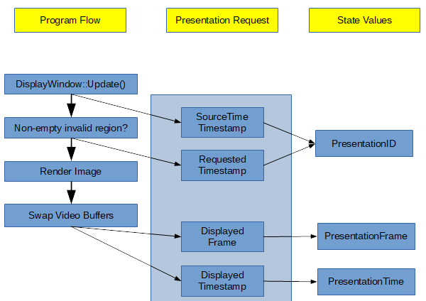

![[Main Page]](../../rsrc/bci2000logo.svg)
CenterOutTask
Contributions
Synopsis
This is an implementation of a cursor task using the BCI2000 CursorTask application framework. It is modeled off the original center-out task designed by A.P. Georgopoulos (Georgopoulos, A. P., Schwartz, A. B., & Kettner, R. E. (1986). Neuronal population coding of movement direction. Science, 233(4771), 1416-1419.) The purpose of the CursorTask is to provide a BCI2000 User Application module framwork that can realize 1D, 2D, or 3D cursor movement tasks. It displays a box-shaped scene in which a ball-shaped cursor moves, controlled by the output of the Signal Processing Module. In this scene, targets appear as spheres.
Functional Description
Timeline
{kind=link}
{kind=link}
Visual Representation
{kind=link}
Introduction
The Center-Out task implements a cursor movement task based on a 3-dimensional control signal communicated to it by an appropriate BCI2000 Signal Processing module. This task progresses through 6 subsequent stages (as illustrated in the Timeline):
Task Description
The cursor should always be visible on screen. Each trial begins with only the cursor visible and no targets. The cursor will change color over the course of each task trial. Initially CursorColor is set to gray. At any point during the trial, if the trial is failed, CursorColor should immediately change to red and all objects should remain on the screen for FeedbackTime amount of time, after which all objects on screen except the cursor are removed.
The central target appears first and must be "captured" (i.e. touched by the subject's cursor) within a preset duration of time indicated by the parameter StartTime. The central target should change color when the cursor is touching it (i.e., CentralTargetColor should be initialized to a certain color, and when the cursor captures the central target, CentralTargetColor is changed to a new color). If the cursor does not touch the central target within StartTime amount of time from when the central target first appears on screen, then the trial has failed.
The subject must then hold the cursor on the central target for a duration of time that is randomly generated (according to a uniform random distribution) between MinHoldATime and MaxHoldATime. So both of those parameters should be settable by the researcher before the cursor task is launched. If, on a specific trial, the subject does not hold the cursor on the central target for the duration of time randomly generated for that particular trial, the trial has failed (and should be recorded as a "Hold A failure").
After Hold A is complete, the outer target appears and there is a randomly generated delay period before the subject is allowed to leave the central target. The duration of the delay period is randomly generated (according to a uniform random distribution) between MinDelayTime and MaxDelayTime; so again, both of these parameters need to be set by the researcher before the cursor task is launched. If the subject moves the cursor away from the central target during the randomly generated delay period, it is a trial failure (and should be recorded as "Delay failure").
Immediately after the delay period ends, the central target disappears cueing the subject to move to outer target. But if the subject moves away from the central target immediately, faster than what should be possible given physiological reaction time limits, then we know that they were anticipating the outer target's appearance and not actually reacting to its appearance. So we impose two boundary conditions on the reaction time. 1) If the cursor moves away from (i.e. stops touching) the central target in a time period less than MinReactionTime after the end of the delay period, then the trial fails (and should be recorded as "Min reaction time failure"). 2) If the cursor does not move away from (i.e. continues to touch) the central target in a time period greater than MaxReactionTime after the end of the delay period, then the trial fails (and should be recorded as "Max reaction time failure").
The time taken for the cursor to stop touching the central target and start touching the outer target is known as the movement time. We impose a restriction that the movement time must be less than a preset value, MaxMovementTime. If the movement time on any given trial exceeds the MaxMovementTime, the trial fails (and should be recorded as "Movement failure"). As soon as the cursor touches the outer target it should change color (video has this option turned off) and the Hold B period begins. The subject must then hold the cursor on the outer target for a duration of time that is randomly generated (according to a uniform random distribution) between MinHoldBTime and MaxHoldBTime. Again, both of those parameters should be settable by the researcher before the cursor task is launched. If, on a specific trial, the subject does not hold the cursor on the outer target for the duration of time randomly generated for that particular trial, the trial has failed (and should be recorded as a "Hold B failure").
If the subject successfully completes all of the above steps given the restrictions, the cursor and target changes color (green as in video) then the trial has succeeded (and this should be recorded as "Success" -- or it could be an int value of 1, while all the failure flags are other negative integers.) If the trial ends for whatever reason (e.g. success or failure), we need to set a time period for which to display feedback to the subject about their performance. In the video you can see this is typically done by changing the color of the cursor and outer target to green in the case of a success, and objects on the screen would turn red in the case of a failure. The time period of trial feedback should be settable as a time parameter called FeedbackTime. As soon as the trial ends (either due to success or failure), the inter-trial interval begins, and this should also be settable as a time parameter called InterTrialInt.
Control Signal
Cursor movement is controlled by the output of the Signal Processing Module. In this signal, channels 1, 2, and 3 correspond to dimensions X, Y, and Z, and there is a single value (element) present in each channel, defining cursor speed in the respective dimension.
Additional channels or elements that might be present in the control signal will be ignored by the CursorTask application module.
We also have extended support to allow for any standard joystick controller to control the cursor.
Parameters
Sequencing
StartTime
The duration of time in which the central target appears and and must be captured.
minHoldATime
The minimum value for the duration of time in which the subject must hold on the central target.
MaxHoldATime
The maximum value for the duration of time in which the subject must hold on the central target.
minDelayTime
The minimum value for the duration of time in which the the outer target appears but where the subject is not allowed to leave the central target.
maxDelayTime
The maximum value for the duration of time in which the the outer target appears but where the subject is not allowed to leave the central target.
minReactionTime
The amount of time which must elapse before the subject can move their cursor to the outer target, otherwise it is noted as a min reaction time failure.
maxReactionTime
The maximum amount of time in which the patient must move their cursor away from the center target. If the cursor does not move before the maxReactionTime then it is recorded as a Max reaction time failure.
maxMovementTime
The time taken for the cursor to stop touching the central target and start touching the outer target is known as the movement time. We impose a restriction that the movement time must be less than a preset value, MaxMovementTime. If the movement time on any given trial exceeds the MaxMovementTime, the trial fails (and should be recorded as "Movement failure").
minHoldBTime
The minimum value for the duration of time in which the subject must hold on the outer target.
maxHoldBTime
The maximum value for the duration of time in which the subject must hold on the outer target.
FeedbackTime
The time period of trial feedback.
InterTrialInt
the amount of time between trials.
skipHoldA
A boolean value which decides whether or not to skip the hold A phase.
skipHoldB
A boolean value which decides whether or not to skip the hold B phase.
MaxFeedbackDuration
Abort a trial after this amount of feedback time has expired. Unlike the FeedbackDuration parameter, this is a hard limit. Given in sample blocks, or in time units when immediately followed with 's', 'ms', or similar.
Visual Appearance
Positions and sizes are given in a percent coordinate system. There, [0 0 0] corresponds to the bottom left corner of the workspace, and its diagonal counterpart has [100 100 100] as its coordinates.
CameraPos
Camera position vector in percent coordinates of the 3D area.
CameraAim
Camera aim point in percent coordinates.
CameraProjection
An enumerated value specifying one of the following camera projections:
- 0: flat,
- 1: wide angle perspective,
- 2: narrow angle perspective.
LightSourcePos
Light source position in percent coordinates.
LightSourceColor
The light source's color in RGB encoding.
WorkspaceBoundaryColor
The workspace boundary color in RGB encoding. The special value of 0xff000000 hides the workspace boundary.
WorkspaceBoundaryTexture
The path to a workspace boundary texture, or empty. Currently, Windows BMP files are accepted as textures. Paths may be absolute, or relative to the executable's working directory at startup, which usually matches the executable's location.
CursorWidth
The feedback cursor's width, given in percent of screen width.
CursorColorFront, CursorColorBack
The cursor's color when it is in the front resp. back of the workspace, given as an RGB value. When different colors are specified for front and back, the cursor's z coordinate will be used to linearly interpolate between the two color values.
CursorTexture
The path to a texture file to be used for the cursor.
CursorPos
The cursor's starting position, given as a vector in percent coordinates.
Targets
A matrix with 6 columns, and rows corresponding to individual targets. The first three columns define the position coordinates of the target's center, given in percent coordinates; the last three columns define the target's three-dimensional extent. Targets are always cuboids aligned with the three coordinate axes.
TargetColor
Target color in RGB encoding.
TargetTexture
Path to a texture file to be used for targets, or empty for none. Currently, Windows BMP files are accepted as textures. Paths may be absolute, or relative to the executable's working directory at startup, which usually matches the executable's location.
TestAllTargets
An enumerated value that determines collision test behavior:
- 0 to test only the visible current target,
- 1 to test all targets.
Window Properties
WindowWidth, WindowHeight
The width and height of the subject-visible application window, in pixels.
WindowLeft, WindowTop
The screen position of the application window's top left corner, in pixels.
RenderingQuality
An enumerated value specifying one of the following:
- 0: low
2D rendering. Lighting, shading, and textures are switched off, even if specified otherwise for individual objects. Also, collision detection ignores objects' z positions. On machines without OpenGL compatible 3D hardware, 2D rendering is considerably faster than 3D rendering. - 1: high
3D rendering. Lighting, shading, and textures are applied as specified.
States
PreStimulusTime
A 16-bit time stamp in the same format as the SourceTime state. This time stamp is set immediately before the application module is going to update the stimulus/feedback display. Note that a data block is saved together with the state vector that existed immediately after it was acquired. Thus, PreStimulusTime will be the prestimulus time of the block prior to the current block.
StimulusTime
A 16-bit time stamp in the same format as the SourceTime state. This time stamp is set immediately after the application module has updated the stimulus/feedback display. Note that a data block is saved together with the state vector that existed immediately after it was acquired. Thus, StimulusTime will be the stimulus time of the block prior to the current block.
PresentationRequested
This 32-bit state contains a list of ids for all presentations that have been requested during the current block. The list ends with a value of 2^31. A 32-bit presentation id is formed by combining the 16-bit SourceTime state of the presentation request's data block in the most significant bits, with the time difference between that source time stamp and the time when the presentation request happened, in the least significant bits:
PresentationID = SourceTime << 8 | (RequestTime - SourceTime) & 0xff
This definition makes presentation ids unique within the range of a minute, and allows to extract the value of the request's time stamp from its id.
PresentationDisplayed
This 32-bit state contains a list of ids for all presentations that have been displayed during the current block. The list ends with a value of 2^31. Presentation ids appear in the PresentationRequested state when presentation is requested, and subsequently in the PresentationDisplayed state when presentation has occurred.
PresentationTime
A 16-bit time stamp in the same format as the SourceTime state. For each id occurring in the PresentationDisplayed state, this state contains the time stamp of the respective update to video memory. From this point in time, up to two additional frame durations may be required before the display's surface actually shows a difference in signal. This depends on the internals of the display, and cannot be determined from software.
PresentationFrame
A 12-bit state that contains, for each id occurring in the PresentationDisplayed state, the frame number of the respective update to video memory. Frame numbers have an arbitrary offset, and wrap around at a value of 2^11. 
{kind=link}
AudioBufferTime
A 16-bit time stamp in the same format as the SourceTime state. For each audio presentation that has occurred during the current block, this state contains the time stamp when non-zero audio data were about to enter the system's audio buffer.
AudioPresentationTime
A 16-bit time stamp in the same format as the SourceTime state. For each audio presentation that has occurred during the current block, this state contains the estimated time stamp when non-zero audio data were being played from the system's speakers or headphones. The estimate takes the length of the system's audio buffers into account but will not be able to detect external sources of delays, such as additional audio processing steps.
TargetCode
During a feedback trial, this state indicates the user's task, i.e. the target the cursor is supposed to hit. A TargetCode value of zero indicates that there is no target specified; TargetCode switching from zero to nonzero indicates the beginning of a trial.
ResultCode
At the end of a feedback trial, ResultCode is set to the target code of the outcome, i.e. the target that was hit by the cursor. When a time of PostTrialDuration has passed, ResultCode is reset to zero.
Feedback
This state's value is 1 when the cursor is displayed on the feedback screen. Typically, this also implies that the cursor moves according to the control signal.
PauseApplication
While this state is set to 1, no task processing occurs, i.e. the task is paused, and may be resumed by setting PauseApplication to 0.
CursorPosX, CursorPosY, CursorPosZ
These states record the cursor's position, translated into the 0..4095 range such that the 3D scene's left, down, and top planes all correspond to 0, and the right, up, and bottom planes correspond to 4095.
mHoldATime, mHoldBTime, mDelayTime
These states are randomly assigned values which change with each new trial. The random number which it chooses is based off the min and max values assigned in the parameters.
phase
This tells us what phase of the trial that we are in.
Phase 0 is pre-run.
Phase 1 is HoldA.
Phase 2 is delay.
Phase 3 is reaction.
Phase 4 is movement.
Phase 5 is holdB.
Phase 6 is ITI.
Phase 7 is fail state (Acts as a secondary ITI in the case of task failure.
Phase 8 is post-run (end of the experiment).
Failure
This state denotes that there was a failure and records the phase of the experiment where failure occurred.
Success
This state is set to 1 for the duration of feedback when the trial is completed successfully.
distanceToTarget
This state represents the distance from the center point of the cursor to the center point of the current target.
timeOnTarget
This state represents the amount of time, in milliseconds, that has passed with the cursor being on the current target.
See also
Programming Reference:3D API, Programming Reference:FeedbackTask Class